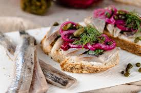
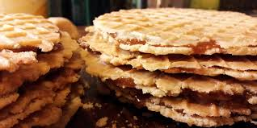
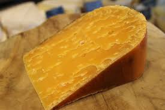

Amsterdam's culinary scene is as rich and diverse as its culture, with traditional Dutch food being a highlight for locals and visitors alike. While the city offers a range of international dishes, traditional Amsterdam food is grounded in comfort and simplicity, reflecting the Dutch way of life.
Haring
Haring, or Dutch herring, is a beloved traditional delicacy in the Netherlands, enjoyed by locals and tourists alike. This raw fish, lightly cured in a salt brine, is typically eaten with chopped onions and pickles for added flavor. The Dutch have a unique way of eating it—holding the herring by its tail and taking a bite from the whole fish, though it can also be served in a sandwich, known as a broodje haring. Haring can be found at dedicated herring carts (haringhandels) and fish stalls throughout the Netherlands, especially in Amsterdam. It’s an authentic Dutch experience that gives visitors a taste of the country’s culinary tradition.
 Stroopwafels
Stroopwafels are one of the most beloved Dutch treats, known for their crispy, chewy texture and rich caramel flavor. This iconic snack consists of two thin waffles pressed together with a layer of sweet, gooey caramel syrup (or stroop) in the middle. Traditionally, stroopwafels are enjoyed with a hot cup of coffee or tea—place the waffle on top of your cup for a minute to warm it up and melt the caramel, creating a deliciously warm, soft center.
Kaas Cheese
The Netherlands is famous for its cheeses, and no trip to Amsterdam would be complete without sampling some local varieties. Gouda and Edam are popular Dutch cheeses, but you can also find aged cheeses with intense flavors like Leidse Kaas or Boerenkaas.